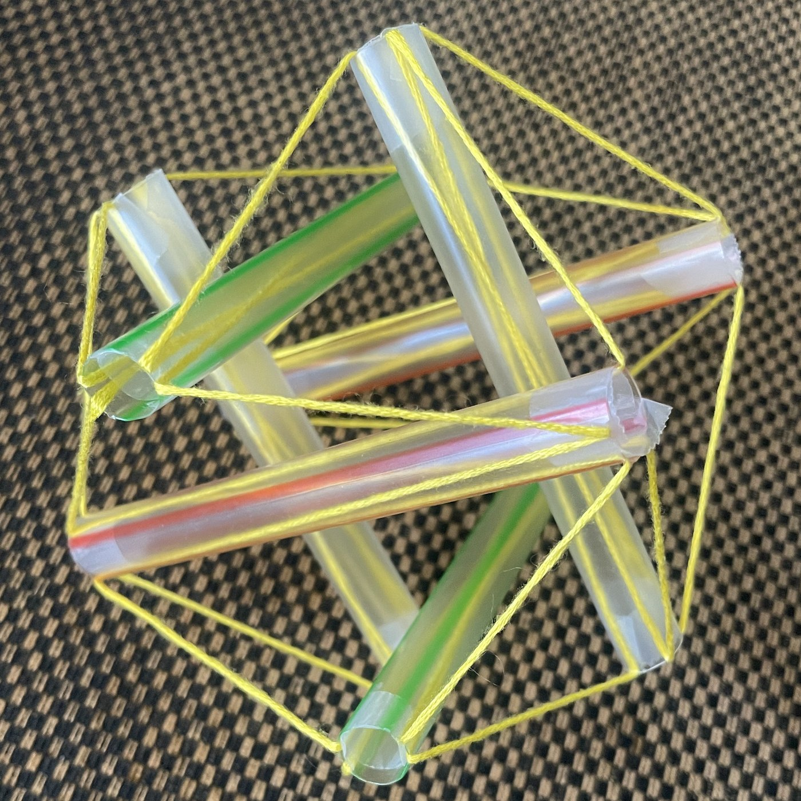

Do you have kids?
Then this page is for you. How you raise a child depends on what you believe a child is, and on what you believe is good for that child. The Holistic Model of Reality (HMR) describes a world in which what is good for a child is very different from what most people think today.
You love your children and you want the best for them. We take that as given. Our claim is that science and medicine have not handed you the instructions for what is best, and that parents everywhere have been steered away from a much better practice. This is more than a small tip. We are asking you to look closely at how children are cared for, to test what we say on your own body, and to change what you do if you find we are right.
Grow a body
Bones push, the web holds. Drag to grow the frame and see what an even web, and a tight one, do to it.
A toy that shows the idea, solved live as a small physics model.
Every day counts while a child is growing.
The human body is a tensegrity: bones held in a web of fascia under tension. A child's web is being built right now, and whatever shapes it during growth, it keeps. HMR predicts that children whose web is cared for every day will grow up more athletic and more symmetrical than their peers, with clearer skin and easier movement.
Think about what children are teased for: being clumsy, being bad at sports, how they look. In HMR's view, much of that is not fate or genes. It is a tensegrity that grew slightly out of shape and was never helped back. A body in its intended shape is coordinated, symmetrical and attractive, because that is what the design looks like when nothing is pulling it off line.
This is not a reason for dread. It is a reason to start. Each day of care is a day of growth pointed in the right direction.
We cannot convince you with one website. What we can do is give you the argument and the tools, and ask you to find out for yourself whether we are right. Because if we are, everyone should change what they are doing.
These are HMR's predictions, not established medicine; no trial has yet followed children raised this way. So test it where you can see the result: learn the protocol on your own body for a few weeks, read the evidence that the body is a tensegrity, and judge.

A tensegrity a child can build →Six straws and some elastic: rigid pieces that never touch, held by tension alone. The body is built on the same principle.Photo: QuarterNotes, CC BY-SA 4.0, Wikimedia CommonsTwo worlds, two childhoods.
Raised in a materialist world
- The body is taken as it comes. If nothing hurts, it is called healthy.
- Skin care stops at a bath and the occasional lotion. No one works the connective tissue underneath.
- Narrow, pointed shoes from the first steps; long hours sitting from the first school day.
- Exercise is sport and effort, loaded onto whatever body the child happens to have.
- A child is told the universe is an accident, and is left to work out alone why so many adults are anxious, depressed or at war with each other.
Raised in an HMR world
- The body is a tensegrity being built, and every day of growth shapes it. Health is measured against the ideal, not against "nothing hurts yet".
- Daily fascia care is as ordinary as brushing teeth: warm water, layered moisturizer, massage, gentle scraping, long easy stretches.
- Feet are free to spread, in foot-shaped shoes, from the start.
- Strength training comes after the web is in good shape, not before.
- A child is told what they are: an instance of the same Universal Intelligence as everyone else, with a part to play. Universal Intelligence →
No one is caring for children's fascia.
Very few parents anywhere put their children through a strict daily moisturizing routine, or work their tissue with scrapers, massage and long holds. Almost no one has been told it matters. Right now the world has no fascia health protocol at all.
Yet childhood is exactly when it matters most. Children have not yet built up the adhesions and dense patches that adults carry. Their fascia is growing, and it is shaped by whatever forces act on it while it grows: posture, shoes, sitting, sport, and care or the lack of it. In HMR's view, puberty is the most important window of all, because the body grows fastest then. Why puberty matters →
Adults have carried the imperfections they grew into for life. With a protocol, an adult can work to undo them. A child can avoid most of them in the first place.
Start as soon as possible. Every month of growth without care is a month the web is shaped by chance. In HMR's view, learning this protocol and helping children grow into the tensegrities they were meant to be is every parent's responsibility.
This is hard to test in clinics, and it does not need a clinic. Parents learn the protocol on themselves, then teach it to their children, and children learn to care for themselves. That moves everyday healthcare from the doctor's office to the family, which is itself a change in how humanity looks after its health. HMR Fascia Health Protocol →
 This is the web →Loose connective tissue under the microscope: collagen, elastic fibres and the cells that keep remodeling them, all through childhood.Berkshire Community College Bioscience Image Library, CC0, Wikimedia Commons
This is the web →Loose connective tissue under the microscope: collagen, elastic fibres and the cells that keep remodeling them, all through childhood.Berkshire Community College Bioscience Image Library, CC0, Wikimedia Commons
Puberty is the tensegrity reaching its limits.
Medicine describes puberty through hormones, and the hormones are real. HMR adds a mechanical picture on top. As a child nears full height, the skeleton has grown about as far as the fascia web allows, and the growing frame starts to push against the web. Where the web is even, it stretches evenly. Where it is tight or stuck, the push lands in the wrong places and stretches them out of shape.
In HMR's hypothesis, the familiar troubles of those years are symptoms of a tensegrity being pushed out of shape: the skin breaking out, the clumsiness of a body that suddenly does not fit itself, the cracking voice.
And puberty ends, in this view, not because it has been completed well, but because the web has adapted to its imperfections. It lays down adhesions to stabilize itself, and it can stabilize in a poor position. That position is the adult body most people then live in for life.
This is a hypothesis of HMR, not a finding. Medicine attributes acne and the changing voice to hormones acting on skin glands and the growing larynx; HMR does not dispute those facts, and proposes that the state of the web decides how hard those years land.
If this is right, the years before and during puberty are the best chance a person ever gets. A web that enters puberty supple and even has room for the frame to grow into. A web that enters it tight gets locked that way.
How fast the frame grows
Centimetres of height added per year, by age. Move across the chart to read it.
Growth is fastest in the first years of life and again at puberty.
Averages for American children from Abbassi, Pediatrics, 1998: the spurt starts at about 9 (girls) and 11 (boys) and peaks at 8.3 and 9.5 cm a year at about 11.5 and 13.5. The childhood rate of 5 to 6 cm a year is the usual textbook figure. The curves are drawn through those averages; individual children differ by years.
A child's fascia and a child's mind are one system.
Adults today carry a heavy load of anxiety and depression, and medicine struggles to explain it or to agree on what it is seeing (mental health today). HMR's claim is that much of this begins in the body. A web under constant uneven tension sends the brain a constant signal that something is wrong, and a mind living with that signal for decades has a harder time being calm.
So caring for a child's fascia is also caring for the adult mind that child will have. Add an honest account of what they are and how to treat others, and you have given them the three things HMR says mental health rests on: a body at ease, beliefs that are true, and a community that understands them. HMR mental health model →
The link between body tension and mood has research behind it; the claim that fascia care in childhood prevents adult mental illness is HMR's prediction and has not been tested. We think it is one of the most important things anyone could test.
What HMR says mental health rests on
Take one away and the other two carry more. HMR mental health model →
What it looks like at each age.
Gentle daily massage and moisturizer, head to toe. In a large trial of daily emollient from birth, the only problem found was slightly more skin infections in the first year, so use clean hands and simple products (Chalmers et al., Lancet, 2020). Watch for allergies.
Barefoot time and foot-shaped shoes. Play-based long stretches. Make the evening moisturizer and massage a ritual they look forward to. Keep it a game: nothing here should hurt, and a child who says stop should be listened to.
Gentle scraping, foam rolling, vibration, breathing and humming. Teach them to close their eyes and feel the place being worked. The aim at this age is for the routine to become theirs, something they do for themselves without being asked.
The most important years. Daily care, long holds and toe spacing while the body is growing fastest, and strength training only once the web is in good shape. If a teenager will do only one thing, make it the daily long holds through the growth spurt.
Every child, raised the same way.
Picture every child in the world growing up with a body cared for from birth and a clear account of what they are. Bodies that move freely and do not hurt. Minds that are not puzzled by the basic questions, because they have been answered. Children who know that everyone else is an instance of the same intelligence they are, and so have every reason to treat each other well.
Those children would be much less likely to become anxious and depressed adults. Think about how close an adult today can come, starting late, in a body shaped by decades without care. Then imagine a whole generation forged this way from birth, all cooperating from the start.
HMR proposes a future so good for humanity that every generation after this one will look back and think we were out of our minds. Ours will be remembered as the dark age. The traditions call what comes after it a golden age, heaven on earth; HMR reaches the same conclusion by logic, from health, shared understanding and cooperation. The future HMR describes →
- Try the protocol on yourself for a few weeks, so you know what it feels like. The protocol →
- Share it with your children as a daily ritual, and tell them what they are. HMR Values →
- Tell another parent what you saw. This spreads family to family. The HMR →
 People already do this together →Morning tai chi in a New York park. The traditions kept daily care of the body alive for centuries.Carl from New York, CC BY-SA 2.0, Wikimedia Commons
People already do this together →Morning tai chi in a New York park. The traditions kept daily care of the body alive for centuries.Carl from New York, CC BY-SA 2.0, Wikimedia Commons